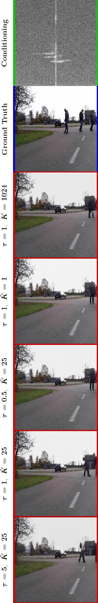

Without any explicit annotation, the model relies exclusively on radar-based environment sensing to construct intuitive camera views of the surrounding

Approach
This work addresses two fundamental aspects of applied modern deep learning research:
- The pervasive yet often unnecessary reliance on explicitly labeled datasets does not scale to the requirements of real-world problems. Manual annotations impair the purity of the data by introducing misinformation and application-related bias. Human interference narrows down the information content of the data and needlessly curtails its significance. Outliers are neglected which prevents the coverage of edge cases vitally important for the application of neural algorithms to real-world situations.
- Deep learning most often resorts to high-level data representations for better intuition while limiting the data amount that needs to be stored and processed. Yet, any manually performed processing discards crucial information through equivocation and should therefore be kept to a minimum. Neural networks do not require the level of visual impressiveness in data as humans do. Collecting the data close to the sensor thus preserves valuable information for the models to find concealed pattern within.
1. Stage: Probabilistic Measurement Compression
Both memory-intensive sensor streams are compressed through categorical variational autoencoders into stochastic integer sequences. Each contained token takes on one of 256 categories representing square input patches of either domain. The reconstruction quality of these quantized representations is a measure of the models discretization capabilities and used as part of the training objective. The animations show how the networks assign different regions of the sensor outputs to distinct latent categories.|
(hover for animation) |
(hover for animation) |

(hover for animation) |
2. Stage: Crossmodal Modeling of Sensor Constituents
Using the memory-reduced domain representations, an autoregressive transformer model finds links between radar and camera measurements in latent space and learns to recognize correlations between both modalities. The incorporated attention mechanism is used to condition camera tokens on discretized radar information. Below animation shows the inter-modal attention span for every head in every layer of the model. Each matrix denotes the strength with which camera tokens pay attention to radar tokens.
Range-Doppler conditioned SYNTHESIS OF CAMERA Views
The trained model successively outputs probability mass functions over camera constituents. Sampling then predicts camera content based exclusively on robust radar sequences regardless of weather conditions. Appending the tokens to the radar sequence makes the model increasingly confident about the composition of the environment in latent space. Upon completed prediction, the constructed camera sequence is decompressed by the categorical decoder into an instructive view of the surroundings.
|
|
|
|
|
Exploring the conditional sample space with temperature sweeps
Constraining the sample space while varying the sampling temperature allows to control the quality of the camera samples. Below animations show probabilistic results and contrasts the generated views for improved visual intuition.
|
|
|

|

|
 |

|
The designed method succeeds in reflecting on the integral objects of a scene and reconstructs crucial entities in the sensors vicinity.
Acknowledgment
The author would like to mention the EleutherAI community and members of the EleutherAI discord channels for fruitful and interesting discussions along the way of composing this paper. Additional thanks to Phil Wang (lucidrains) for his tireless efforts of making attention-based algorithms accessible to the humble deep learning research community.